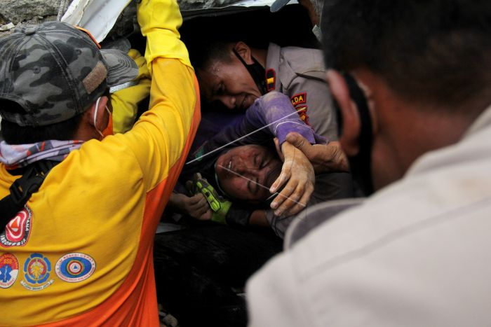

pada tanggal 21 nov 2022 telah mengalami bencana gempa bumi di daerah jawa barat adapun di cianjur yang mendapati kalo disana gunjangan gempa nya sekala sekitar Magnitudo 5.6. pada saat itu warga warga sedang melakukan aktivitas sehari hari nya dan pada jam 13.00 terjadinya gunjangan dan susulan nya mencapai 7x. untuk korban meninggal bencana tersebut cukup banyak sehingga 271 orang dan untuk luka luka sekitar 2.403 orang. para tim sar berupaya menyelamatkan orang orang yang masih dibawah reruntuhan puing puing dan dibantu oleh TNI dan polisi setempat agar pencarian lebih cepat.
 Korban Bencana Gempakeesokan harinya, tim sar mendapatkan laporan ada sekitar 150 orang telah dinyatakan hilang. meskipun begitu tim sar berupaya mencari terus menerus hingga sampe sekarang. tetapi warga jawa barat mengungkapkan akan membantu warga cianjur dengan memberikan sembako dan tunai. "Basarnas sudah menyanggupi hari ini timbunan-timbunan yang diduga kuat ada korban, terutama korban hidup, itu akan diselesaikan hari ini.
Meski jalur utama yang tertimbun longsor sudah normal dan bisa dilalui, Ridwan mengatakan beberapa jalan desa ke puncak bukit “masih ada yang tidak bisa dilalui“. Di lokasi itu, pencarian dan penyelamatan dilakukan menggunakan sepeda motor dan helikopter. Daerah yang sulit tim pencarian dan penyelamatan kami memiliki dua helikopter siap siaga untuk mengangkut beberapa korban ke rumah sakit terdekat“.